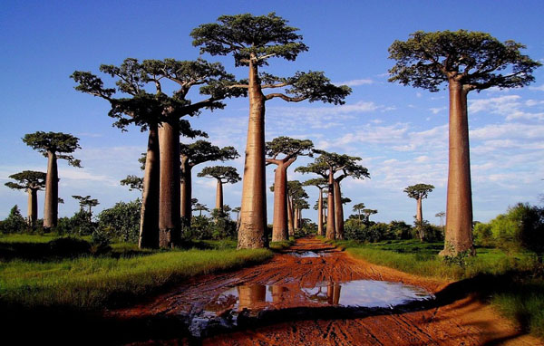

The tree with the most spreading crown. National symbol of India
The tree is one of the most universal symbols of the spiritual culture of mankind. It symbolized the Central axis of the world, connecting Heaven and Earth; man and his path to spiritual heights; the cycles of life, death and rebirth; the Universe and its processes of eternal renewal; the hidden Wisdom and mysterious laws of existence. In ancient times, it was associated with the gods and mystical forces of nature. In the myths of many peoples of the world there are often two Central trees: The tree of life and the Tree of knowledge of Good and Evil.


The roots of the Tree of life, or World tree, go deep into the underworld. Its trunk stretches like a bridge from the Ground to the Sky. Its branches rise to the highest celestial spheres, reaching the mysterious world of the origins of all things, where the gods and stars live. This is the center of the Universe, the core around which the visible and invisible life of the entire Cosmos takes place.